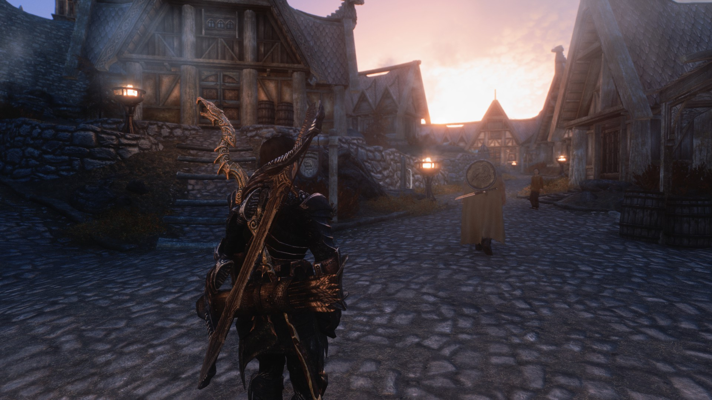
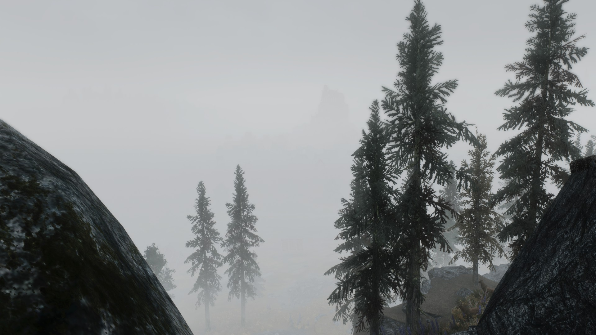
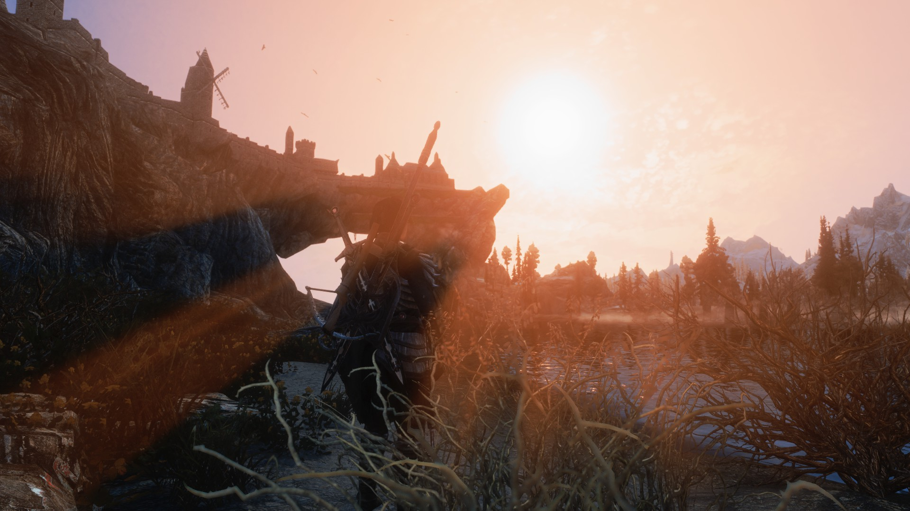
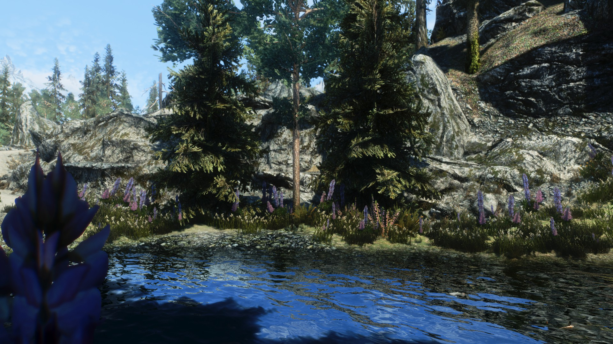
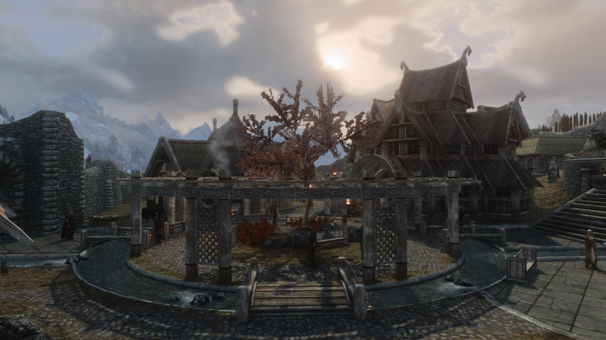
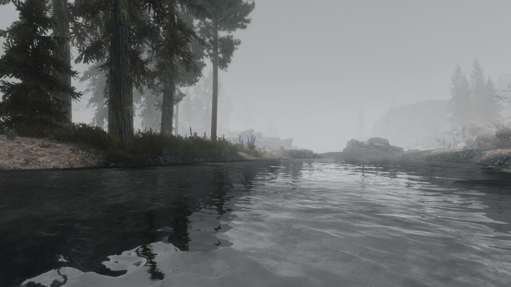
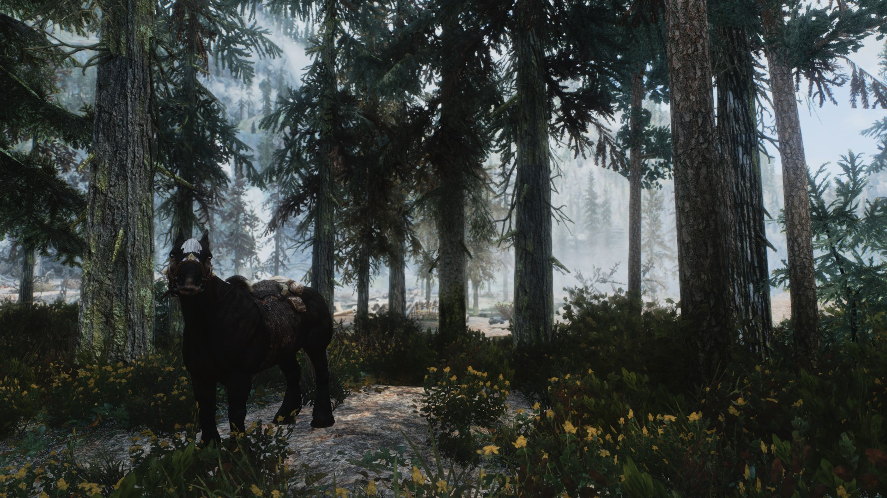
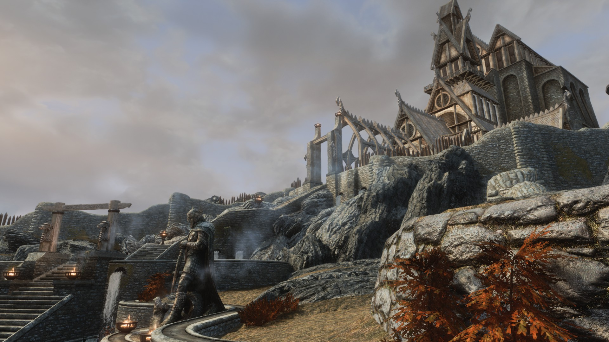

FOR THE LOVE OF THE GAME: SKYRIM
BACKSTORY
As I’ve mentioned a few times already, I more or less fill my spare time with the playing of games. I’ve been doing so since I got a taste of it first on the Gameboy and later Atari 2600.
That later transitioned to mostly PC gaming, where I spend most of my times these days. I’m sure all gamers have their favourite games series and ones that they will always give a go regardless if it gets mediocre or bad reviews.
For me, the game that I’ve always been an avid fan of is the Elder Scroll series. Before the Cybercafe boom spawned my interest in FPS games I remember first playing The Elderscrolls Daggerfall on my friend’s PC.
It was love at first sight and it has continued up to this day, and I can say that I haven’t missed a game in the series apart from the spin-offs like TES: Redguard and Battlespire. Fast forward to the present, I’m still spending hours playing and modding the latest iteration which is Skyrim.
The thing that struck me about Skyrim is the vast community that obviously was well established during the Morrowind era, where now you can think, “Gee, I wish they made this Steel Armor [insert color here] instead”.
Lo and behold, with the modding tools released and also the large amount of modders active means you’ll most likely get what you want. Anyways, after months of modding and changing textures and modifying lighting and etc I finally settled in on my current Skyrim setup.
I won’t mention the mods used here to achieve this look because it’s a long list that would make your eyes bleed. I’ve included shots below of areas in Tamriel to let you guys in on what I’m talking about.
 Whiterun outskirts
 Another case of wood mist
 No sunglasses in Skyrim
 Let's go fishing
 Whiterun center
 River
 Forest mist
Sun rises at Whiterun
 Dragonsreach